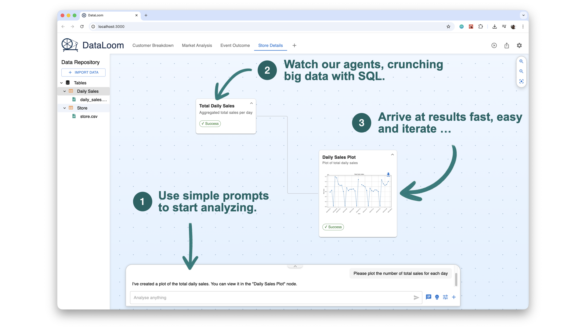

Ask, See, Adjust
Describe the outcome you want; DataLoom creates the analysis, using state of the art database technology under the hood with DuckDb.
Ask in natural language. DataLoom weaves data sources, analyses, and visuals into instant answers.
Automate the tedious processes so teams get their evenings back.
Find answers quickly while the questions are still relevant.
Fast data analytics with minimal SQL background.
Describe the outcome you want; DataLoom creates the analysis, using state of the art database technology under the hood with DuckDb.
We enable everyone to perform data analysis without needing a PhD in statistics.
Every step in our pipelines is fully auditable and explainable.
Our architecture uses decades of database research to efficiently process huge amounts of data in real-time. No more waiting for your reports!
Leveraging databases for processing allows us to minimize LLM costs.
We prioritize your data privacy and ensure compliance with regulations by not leaking any information to the cloud or third parties. 100% on-premise.
In contrast to other solutions, our approach builds code that allows to re-execute any pipeline on new data.

Professor in the Data Systems Lab at UTN. PhD at TUM, PostDoc at MIT, and two years of AWS. Loves making customers happy. 🚴♂️


Postdoc in the Data Systems Lab at UTN. PhD at TUM, PostDoc at FAU, and two years of AWS. Loves making pipelines go brrrrr. 🐢

Student researcher in the Data Systems Lab at UTN. Bachelor's in statistics at LMU and now the very first student at UTN. Loves making complicated math transparent for you. ⛵️
University of Technology Nuremberg
Dr.-Luise-Herzberg-Straße 4
90461 Nuremberg
Germany